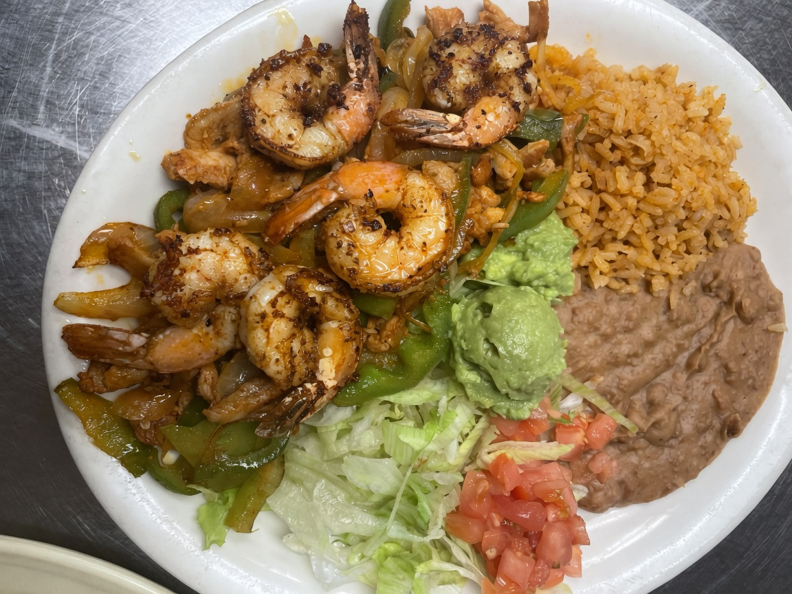

Combo Enchilada
$9.99Two enchiladas with rice, beans and a drink.

Homestyle Mexican | Seguin, Texas
Breakfast and lunch favorites with homemade tortillas, generous plates, and the kind of sauces people drive across town for.
Local favorite
Guests come back for fresh food, homemade corn tortillas, friendly service, and fair prices. Small and clean dining room. Quick plates. Real flavor.
"Fresh fresh fresh and flavorful. Sauces the best. Homemade corn tortillas. Family was so nice."
Tripadvisor guest
From the kitchen
Guest and listing photos from Taqueria Atotonilco - enhanced for clarity only.


From guests
*****
"The food was soooooo good. My wife got the flautas and they were loaded. Enchiladas are my favorite enchiladas in Seguin."
*****
"We eat here all the time. The food and service are always top notch. My wife loves the #45 taquitos. Chips and salsa are great."
*****
"Their carne asada is great. Well seasoned, tasty beef. Grab a huge sweet tea - you'll want that after a few chips of green salsa."
Find us
Come hungry for breakfast or lunch. Call ahead if you have a large group.
Hours can change - call to confirm.
